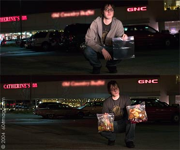
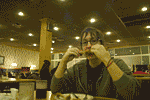

 |
|
| |
|
Ya know, I haven't enjoyed an all-you-can-eat buffet in a long time, so I decided to make my way to the Old Country Buffet. And you can't just go to an OCB and not try to abuse the privilege of open food. I had to take full advantage of an endless food opportunity. I had to think this out and go at it effectively to get my $9.95 worth. I stayed off the starches. They're filler food! I had to avoid all mashed potatoes, fries and bread. If I was going to take the OCB for all it's worth, I had to stick to all meats. In fact, I took the OCB home with me!
I arrived at the OCB armed with empty belly and a box of Ziploc bags. I had heard that a guy got arrested for refusing to stop eating at an OCB and he wasn't even trying to steal so, I if I'm going to do this, I had to do it discreetly. I imagined every OCB employee to be a culinary bouncer, waiting for me to try something and then throw your sorry ass to the street when you do. So my concern was less of getting thrown out and more of how much can I get before they throw me out.
I soon dove into the buffet to fill my belly. I wanted to eat as much as I could for the pure fact I was sure I was getting kicked out. I had a Ziploc under my hoodie waiting to be filled. Now, I started looking around at the patrons of this fine establishment to see what kind of eyes I was up against. Think for a moment and imagine all the kinds of people who might be at an Old Country Buffet. And yeah, every single one of those people was there! I must say I was a little nervous getting my first bit of swag into my bag. After I had the first of my ill-gotten gains, I went for another. I had three pieces of chicken in the bag when an OCB employee jetted over to the table. Lucky for me she was just there to clean up the dishes. Bit by bit I was able to fill bag one to the brim with a plentiful bounty of stolen goods. It was time for bag number two. At this point I had become a little more relaxed. I soon filled the bag and I was on to number three. Three Ziploc bags was the point where I had to ask myself how in hell I was going to get these things out of here. As I got ready to leave, I realized I could just drape a coat over the hand that was holding the bags. It seemed like a good idea till I stood up and it looked like I was carrying a windbreaker made of two-inch-thick lead. It was too late to rethink this method so my friend and I headed towards the door. As I got closer to the door I realized that OCB employees just don't give a shit and I walked out of there with at least a weeks worth of dinner.
Let me share with you some of harvested bounty:
7 fried chicken wings
6 fried chicken breasts
1 frosted strawberry cake
12 pieces of chopped cantaloupe
12 pieces of chopped honeydew
3 cobs of corn
40 blocks of red Jell-O
4 sliced tomatoes
11 fried fish nuggets
2 garlic bread sticks
4 dinner rolls
 |